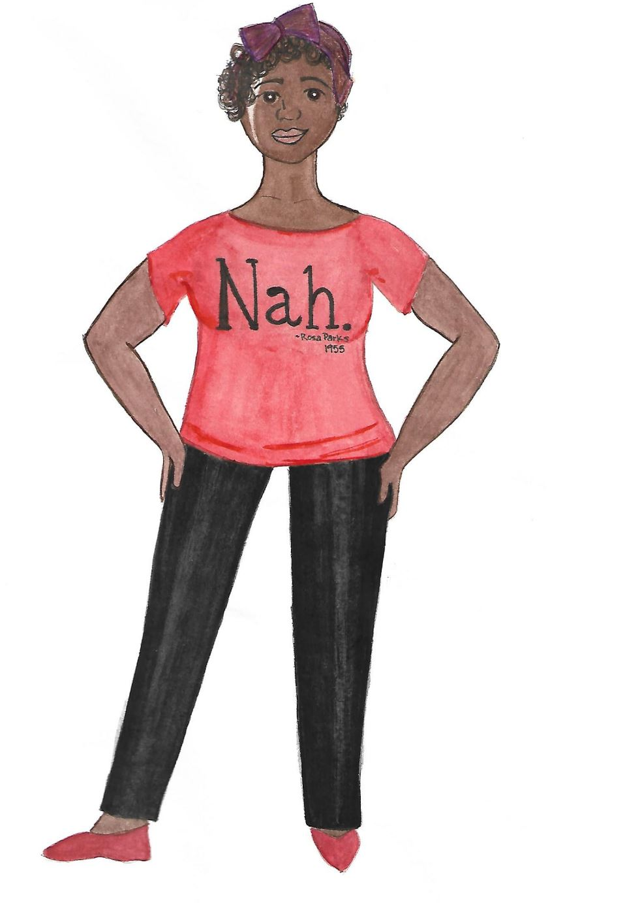

Report Racism in Theatre documents racism, racist ideas, racist policies that are happening in the theatre industry and any theatre training institutions. You may report overt or covert instances that run the spectrum of I know that is racsit to I'm not sure. In the case of "I'm not sure" trust your gut it more than likely was. Feel free to share what you feel comfortable sharing. You can use your name or be anonymous.
Report Here

This website is a product of my antiracist ethos. It is a tool for releasing the racism and trauma we have been taught to hold within our bodies, the result of which is career burnout and literally shortening the lifespans of Black people and People of Color. Our collective silence protects racism giving it room to flurish. We are much more than we have been told. Our resilence, ingenuity, allyship, desire for justice fortifies us from hopelessness, fear and the lie that change is gradual and not possible in our lifetime.
Report Here